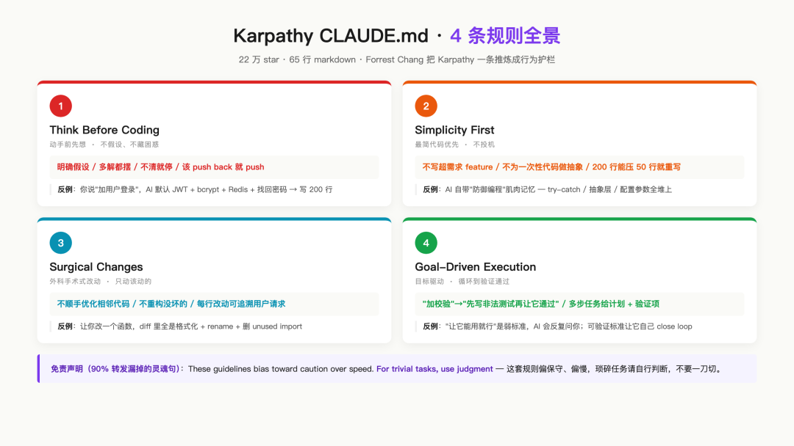
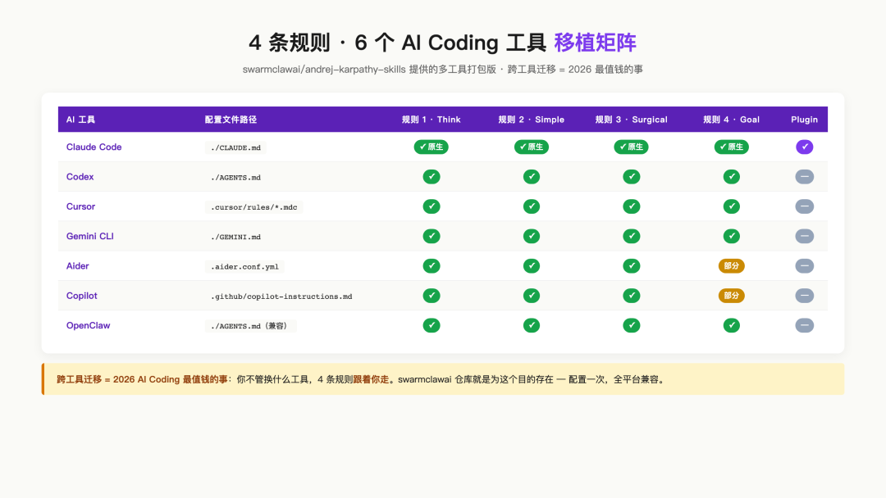

一个奇观 ——
仅65行markdown的文件，5/3登上GitHub trending第一，5月底累计22万 + star。仓库里没代码，没框架，没产品，只有一个CLAUDE.md。
全网AI工具党都在转，截图、抄、装、写衍生版。
它叫 ——
作者：Forrest Chang（不是Karpathy本人）
起点：Karpathy 2026-01-26一条X推文
仓库创建：2026-01-27（推文第二天）
GitHub Trending #1：2026-05-03
累计star：个人号91.2K + 组织镜像132K = 22万 +
文件体量：1个CLAUDE.md / 65行 / 4条规则
这篇5500字，把这件事彻底讲清楚 ——
① 故事：Karpathy一条推，Forrest Chang一夜，怎么变成22万star
② 4条规则中英全文翻译 + 原理解读（核心干货）
③ 真配置：plugin安装一行命令 + 真截图
④ 衍生宝藏：Codex / Cursor / Gemini / Aider / Copilot多AI移植版
⑤ 决策表：4条规则什么时候用、什么时候别用（PM视角踩坑总结）
⑥ 跟我们昨天讲的「提示词 / 知识库 / Skills / Agent 4件套」什么关系
⑦ 5条CLAUDE.md编写最佳实践
一句话定调：这不是"AI编程秘籍"，是所有用Claude Code / Codex / Cursor的人都该有的一份「行为护栏」。
一、Karpathy一条推 → Forrest Chang一夜
故事从2026-01-26开始。
Karpathy（前特斯拉AI总监 / OpenAI联创）在X上发了一条推，描述了他20年来编程方式的最大变化：
变成了「80% Claude Code agent驱动 + 20% 自己接管」。
但agent写代码时有4个反复出现的失败模式，让我反复抓狂 ——
他列出的4个失败模式：
· 替你做错误假设，然后闷头跑下去，从来不停下来检查
· 不管理自己的困惑，遇到不清楚的不提问，硬猜
· 不揭示不一致，看到代码里有冲突的设计，自己默默选一个走下去
· 不呈现tradeoff，明明可以有简单方案，偏要写复杂的，从不push back
Karpathy没有写代码，没有发仓库，他只是抱怨。
1/27，Forrest Chang看完推，做了一件几小时的事 ——
把这4条失败模式反向翻译成4条规则，写成一个65行markdown文件，放进一个空仓库，命名为 `andrej-karpathy-skills`。
这个仓库 ——
· 1/27创建当天：几百star（Karpathy转发了）
· 4月中：突破5万star，进GitHub月度热门
· 5/3：登上GitHub Trending全球 #1
· 5月底：合计22万 + star（含组织镜像）
图1 · Karpathy 1条推到GitHub第一的100天
整件事最讽刺的细节：仓库名叫andrej-karpathy-skills，作者不是Karpathy。
Karpathy自己也在另一条推里说："我没写过这个，但我同意里面每一条。"
这是2026年最典型的协作产物 —— 大佬抱怨 → 工程师炼方法 → 全网受益。
二、4条规则 · 中英全文翻译 + 原理解读
CLAUDE.md的开头有一句免责声明，先把这句翻译过来 ——
这一句被90% 的转发文章漏掉，但它是整个CLAUDE.md的灵魂 —— 不是「越严越好」，是「按场景判断」。后面的决策表会展开。

图2 · 4条规则全景图 · 标题 + 一句话 + 关键反例
规则1 · Think Before Coding（动手前先想）
Before implementing:
- State your assumptions explicitly. If uncertain, ask.
- If multiple interpretations exist, present them - don't pick silently.
- If a simpler approach exists, say so. Push back when warranted.
- If something is unclear, stop. Name what's confusing. Ask.
动手前 ——
· 明确说出你的假设。不确定就问。
· 如果有多种解读，都摆出来，不要偷偷选一个。
· 如果有更简单的方案，说出来。该push back时就push back。
· 如果有不清楚的，停下来。说清楚困惑在哪。问。
这一条的精髓：把"AI替你判断"改成"AI把判断点交回给你"。
反例：你说"加个用户登录"，AI默认你要JWT + bcrypt + Redis session + 邮箱验证 + 找回密码 → 一口气写200行。
正确：AI先问"是要session还是JWT？要找回密码吗？要邮箱验证还是手机？"
规则2 · Simplicity First（最简代码优先）
- No features beyond what was asked.
- No abstractions for single-use code.
- No "flexibility" or "configurability" that wasn't requested.
- No error handling for impossible scenarios.
- If you write 200 lines and it could be 50, rewrite it.
Ask yourself: "Would a senior engineer say this is overcomplicated?" If yes, simplify.
· 不写超出需求的feature。
· 不为一次性代码做抽象。
· 不加用户没要的 "flexibility / 配置性"。
· 不为不可能发生的场景写error handling。
· 如果写了200行但50行就够 —— 重写。
反问自己：「资深工程师会觉得这过度复杂吗？」会，就简化。
这一条的精髓：拦截AI的"过度防御编程"本能。
AI模型训练数据里全是"健壮"的代码，自带写try-catch / 加抽象层 / 留扩展点的肌肉记忆。CLAUDE.md把这些肌肉记忆压回到「真的需要再加」。
规则3 · Surgical Changes（外科手术式改动）
When editing existing code:
- Don't "improve" adjacent code, comments, or formatting.
- Don't refactor things that aren't broken.
- Match existing style, even if you'd do it differently.
- If you notice unrelated dead code, mention it - don't delete it.
When your changes create orphans:
- Remove imports/variables/functions that YOUR changes made unused.
- Don't remove pre-existing dead code unless asked.
The test: Every changed line should trace directly to the user's request.
改既有代码时 ——
· 别"顺手优化"相邻代码、注释、格式。
· 别重构没坏的东西。
· 匹配既有风格，即使你觉得自己的写法更好。
· 发现无关dead code，提一句，不要自己删。
改动产生orphan时 ——
· 删你的改动导致没用的import / 变量 / 函数。
· 别删原本就存在的dead code，除非用户要求。
判定：每一行改动都应该能直接追溯到用户的请求。
这一条的精髓：拦截AI的"顺手强迫症"。
AI看到旁边一段有问题的代码就忍不住要改。这种"边界蔓延"是PR review噩梦的源头：明明只让你改一个函数，diff里全是格式化 + 重命名 + 删unused import + 改注释 —— 5处隐患都没被review到。
判定原则原文非常硬："Every changed line should trace directly to the user's request." —— 每一行都得能溯源。这是工程师视角最锋利的一条。
规则4 · Goal-Driven Execution（目标驱动 + 验证循环）
Transform tasks into verifiable goals:
- "Add validation" → "Write tests for invalid inputs, then make them pass"
- "Fix the bug" → "Write a test that reproduces it, then make it pass"
- "Refactor X" → "Ensure tests pass before and after"
For multi-step tasks, state a brief plan:
1. [Step] → verify: [check]
2. [Step] → verify: [check]
3. [Step] → verify: [check]
Strong success criteria let you loop independently. Weak criteria ("make it work") require constant clarification.
把任务转化为可验证的目标 ——
· "加个校验" → "先写非法输入的测试，再让它通过"
· "修这个bug" → "先写能复现bug的测试，再让它通过"
· "重构X" → "改动前后测试都跑通"
多步任务，给个简短计划 ——
1. [步骤] → 验证：[检查项]
2. [步骤] → 验证：[检查项]
3. [步骤] → 验证：[检查项]
强成功标准能让AI自己循环跑通。弱标准（"让它能用就行"）会让你被反复问。
这一条的精髓：把AI从「指令机器」变成「目标机器」。
指令机器：你说什么它做什么，做错了不知道。目标机器：你给个验证条件，它自己跑 → 验 → 失败 → 改 → 再跑，直到通过。
这就是为什么Karpathy能从80% 手写切到80% Agent驱动 —— 不是AI变聪明了，是"成功标准"被定义得足够清楚，AI能自己close loop。
三、真配置 · 一行plugin安装命令
Karpathy CLAUDE.md最大的价值不只是内容，更是分发方式。
Forrest Chang把这套规则封装成了Claude Code plugin，两行命令装进任何项目 ——
/plugin marketplace add forrestchang/andrej-karpathy-skills
# 命令 2 · 安装 plugin
/plugin install andrej-karpathy-skills@karpathy-skills
装完后，4条规则会以skill的形式注入每个Claude Code会话 —— 不需要每个项目手动copy CLAUDE.md。
手动copy路径（不用plugin的人）
curl -o CLAUDE.md https://raw.githubusercontent.com/\
forrestchang/andrej-karpathy-skills/main/CLAUDE.md
# 方法 2 · 全局生效
curl -o ~/.claude/CLAUDE.md https://raw.githubusercontent.com/\
forrestchang/andrej-karpathy-skills/main/CLAUDE.md
· 项目CLAUDE.md：只对该项目生效，可以和项目特定规则合并
· 全局CLAUDE.md（`~/.claude/CLAUDE.md`）：所有项目自动继承，但容易被项目规则覆盖
· 推荐：先项目级试2周，验证有效再升全局
四、衍生宝藏 · 多AI移植 + v2增强版
这套规则不只是Claude Code专属。
5月以来，已经有3个衍生版本覆盖了主流AI Coding工具 ——

图3 · 4条规则在6个AI Coding工具上的移植矩阵
衍生1 · swarmclawai多AI移植版
仓库：swarmclawai/andrej-karpathy-skills
特点：把同一套4条规则同时打包成 ——
· Claude Code的CLAUDE.md + skill plugin
· Codex的AGENTS.md
· Cursor的 .cursorrules + .cursor/rules/*.mdc
· Gemini CLI的GEMINI.md
· OpenCode / Aider / Copilot的对应格式
· OpenClaw + 任何兼容AGENTS.md的agent
衍生2 · v2增强版（gist）
Gist地址：gist.github.com/renezander030/2898eb...（搜karpathy-skills CLAUDE.md v2即可找到）
改进：基于forrestchang模板，加了 ——
· 项目级lessons.md集成（错过的坑写进去）
· commit message规范
· PR自动化检查清单
v2已经超出65行了，但4条核心规则没改。
五、决策表 · 4条规则什么时候用 / 不用
这里是本文最值钱的一段，也是Karpathy CLAUDE.md官方没写的内容 —— PM视角的踩坑总结。
Karpathy CLAUDE.md开头有一句话很重要："For trivial tasks, use judgment"（琐碎任务自己判断）。这句话被很多人忽略，所以很多人装完后体验反而变差。
不是越多越好。是按场景启用。下面是6种场景的开关矩阵 ——
表 · CLAUDE.md 4条规则使用场景决策（不是越多越好）
琐碎、试错、文字、ops场景 → 直接关。生产代码、多文件改动、bug修复、长周期feature → 打开。
六、跟昨天的「提示词 / 知识库 / Skills / Agent 4件套」什么关系
昨天我们写了「提示词 / 知识库 / Skills / Agent」4件套区分。
今天这个Karpathy CLAUDE.md，恰好横跨其中3件 ——
→ 本质：项目级的「提示词」
→ 给 Claude Code 读，每次会话开头注入
场景 2 · 装成 Claude Code plugin
→ 本质：Skills 的最小化形式
→ /plugin marketplace add + /plugin install 两行
场景 3 · 通过 plugin 触发 sub-agent 行为
→ 本质：Agent 的行为约束层
→ 4 条规则改变 sub-agent 怎么思考 / 执行
这是Karpathy CLAUDE.md真正厉害的地方：用一份65行markdown，同时在3个层级生效 —— 提示词层 + Skills层 + Agent行为层。
反过来想：如果你已经做了好几条skill / 写了prompt模板 / 起了sub-agent —— 不妨先回头检查这4条规则，往里抄。比新造一个轮子有用。
七、写在最后 · 5条CLAUDE.md编写最佳实践
最后总结5条 ——
1 · 短文件 > 长文件
65行胜过6500行。AI读不完，你也维护不动。Karpathy CLAUDE.md选65行不是偷懒，是工程判断。
2 · 行为护栏 > 知识灌输
CLAUDE.md写"项目是干啥的 / 有哪些表 / 接口在哪" → AI读完没用（这些grep一下就知道）。
CLAUDE.md写"动手前先问、最简代码、外科手术、目标驱动" → AI每次会话都受益。
3 · 给tradeoff不给规则
Karpathy CLAUDE.md开头第一句是"这套规则偏保守，琐碎任务自己判断"。
给tradeoff让AI自己决策，比直接给死规则强10倍。
4 · 可验证 > 描述性
不要写"代码要清晰" / "注释要友好"。
要写"每一行改动都得能追溯到用户请求" / "200行能压到50行就重写"。
可验证的标准才能让AI自己循环。
5 · 跨工具兼容
写CLAUDE.md时，避免Claude Code专属语法（@import之类）。
用纯markdown，方便迁移到Codex / Cursor / Gemini。
swarmclawai版能做多AI移植，本质就是forrestchang原版用了纯markdown。
「大道至简，大音希声」——《道德经》第四十一章
22万star的65行markdown给所有人上了一课 ——
· 不是越复杂越显得专业
· 不是规则越多越管用
· 不是用什么工具，是怎么跟工具协作
Karpathy没写代码，他只是认真抱怨了一次。
Forrest Chang没造产品，他只是把抱怨炼成了规则。
22万人受益。
对每个用Claude Code / Codex / Cursor的人来说，这65行该装上。
对每个写CLAUDE.md / AGENTS.md / .cursorrules的人来说，这是最值得学的模板。
地图给了。装上试试。
关注「AI落地手记」，不见不散。
一个人 + AI管20个项目的真实记录
原创翻译 + 拆解 + 多AI移植，挺费功夫的。
觉得有用，点一下下面那个红色的「喜欢作者」就够了；不方便的话，转发给一个还在跟Claude / Codex / Cursor打架的朋友 —— 对我一样是支持。